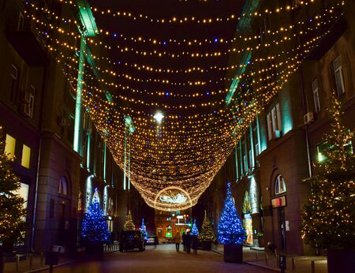

Ukriane's Tourist Destinations
There are allot of amazing places to visit in this country.
* As mentioned before the capital of Ukraine os Kyiv
and allot of tourists visit there because of the popular
Independence square.
* The other place is called Khreschatyk Street which became popular
after allot of shows and football events happened there.
* Bukovel is also hugely known for its huge mountains where people
from around the world join to take a part in skiing or snowboarding.
